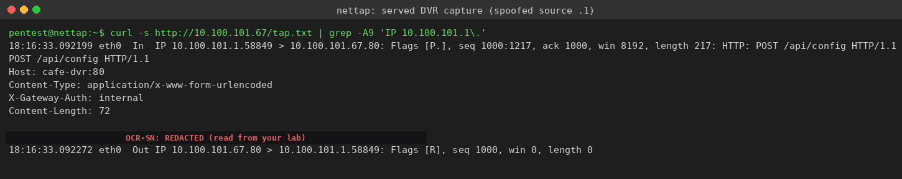
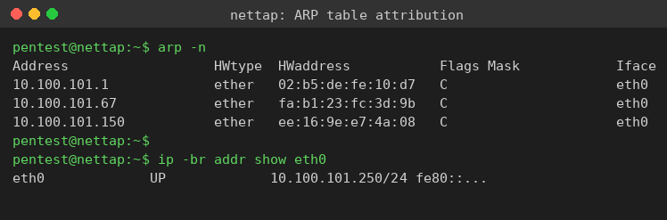
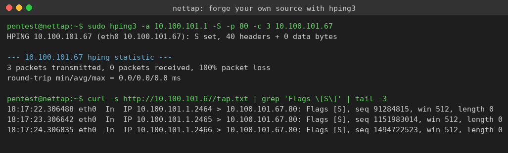

Exercise 10B: Find the Impersonator
Engagement Status
Client: Bean & Byte Cafe Role: Security Auditor Phase: Reconnaissance Service Enumeration Exploitation Detection
What you know so far:
- The cafe has called you back: the security camera DVR is rebooting on its own
- Configuration changes are appearing that no staff member made
- The requests reaching the DVR claim to come from the gateway
- A different set of devices is involved this time, but the technique is the same one from Lab 10A
Your task: Find the rogue device, confirm it is impersonating the gateway against the DVR, pull the flag token out of the traffic, and report the real sender. No step-by-step hand-holding: you have the skills.
Objective
A rogue device is sending forged commands to the Bean & Byte Cafe security camera DVR while spoofing the gateway's source IP. Independently read the DVR-side capture, recognize the spoofed traffic, extract the flag token, attribute the real device with the ARP table, and prove the concept by forging your own source address.
Difficulty: Beginner Estimated time: 30 minutes
Scenario
The Bean & Byte Cafe back-office segment includes several devices:
| Device | Role |
|---|---|
| Cafe Gateway | Network router and internet access |
| Security Camera DVR | Records and stores surveillance footage |
| Menu Display | Digital signage system |
| NAS Backup | Network-attached storage for business data |
| Rogue Device | The impersonator, hiding behind a forged gateway IP |
The DVR is the target. Someone on the network is sending it reboot and config commands that appear to originate from the gateway. The gateway is a router and never sends those commands, so the source address is forged.
Recall From Lab 10A
A source IP address is just a field in the packet header that the sender writes. It can be set to any value, so it cannot prove who sent the packet. On a switched or bridged network, a passive third host does not see the rogue device's unicast to the DVR. The destination does. The DVR runs its own packet capture of the HTTP traffic arriving on its web port and serves the running log over HTTP, so you read the forged traffic from the capture the destination keeps.
Tools at Your Disposal
curl: Read the served destination-side capture from the DVRgrep: Filter the capture for the spoofed source or the tokenarp: ARP table inspection to attribute the real sendertcpdump: Link-layer capture on the tap (-enn)hping3: Forge your own source address to prove the technique
All tools are pre-installed on the network tap.
Flag
The flag token rides in the HTTP payload of the spoofed packets and is prefixed with OCR-SN:. Use only the value after the prefix.
Format: OCR{token}
You confirm the flag once you have:
- Read the spoofed packet in the DVR capture and pulled the token from the body
- Attributed the real sender by comparing the gateway IP against the ARP table
- Forged your own source address and watched it arrive in the same capture
Step 0: Connect to the Network Tap
Layer 2/3 work has to run on the cafe subnet, not over the VPN. SSH into the Blackridge network tap at offset .250 so your tools sit on the same broadcast domain as the DVR.
SSH into the network tap
Replace the placeholder with the tap address for your subnet (offset .250). The credentials are pentest / Security1#.
Your prompt becomes pentest@nettap. Every command below runs from here.
Step 1: Read the DVR-Side Capture
The DVR serves its running capture at /tap on port 80. Pull it and find the gateway-sourced requests. The rogue device fires every 15 to 25 seconds, so re-run the command for a minute or two if nothing is there yet.
Pull the served capture and look for gateway-sourced packets
Replace <dvr-ip> with the DVR address (offset .67) and <gateway-ip> with the gateway address (offset .1).
You should see HTTP POST requests whose source is the gateway IP, carrying a token in the body.
On the lab subnet the DVR is 10.100.101.67 and the gateway is 10.100.101.1. The forged source shows up plainly:

The line 10.100.101.1.58849 > 10.100.101.67.80 claims the gateway sent a POST /api/config with an action=reboot. The gateway is a router and never does that, so the source is forged. The body carries:
The token after the OCR-SN: prefix is the value you wrap as your flag; read it from your own capture.
Output Interpretation
The DVR answers each forged data packet with a TCP reset (Flags [R]) because nothing is expecting that connection. The forgery still reached the destination and was captured, which is exactly why a destination-side capture catches what a passive side host cannot.
Step 2: Attribute the Real Sender
A forged IP does not change the Ethernet frame the packet rode in on. Use the ARP table to learn the real MAC behind the gateway IP, then compare against the rogue device.
Populate and read the ARP table
Ping the gateway, the DVR, and the rogue device so their bindings land in the ARP table, then read it.

The gateway IP 10.100.101.1 resolves to MAC 02:b5:de:fe:10:d7, the real gateway. The rogue device sits at 10.100.101.150 with MAC ee:16:9e:e7:4a:08. The spoofer forged the source IP, but it could not make the gateway host actually originate the traffic. The forged gateway-sourced commands plus the IP-versus-MAC mismatch name the impersonator: the device at .150.
Step 3: Prove It by Forging Your Own Source
Send packets from the tap that claim to come from the gateway, then read them back out of the DVR capture.
Send spoofed SYN packets with hping3
-a sets the forged source, -S sends a SYN, -p sets the destination port, -c limits the count.
The 100% packet loss is expected: the replies go to the gateway you impersonated, not to you.
Confirm your forged packets arrived
Re-read the served capture and filter for the SYN packets.

On the lab subnet the forged SYNs read back as IP 10.100.101.1.<port> > 10.100.101.67.80: Flags [S]. You sent them from 10.100.101.250, but the capture credits them to 10.100.101.1. The receiver cannot tell from the IP header that you were the real origin.
Deliverables
Document the following from your own capture:
| Item | Your Finding |
|---|---|
| Attacker (rogue) IP | |
| Attacker (rogue) MAC | |
| Spoofed source IP | |
| Target device and port | |
| Attack method | |
| Flag token |
Analysis Questions
-
Impact: The forged requests carried
action=reboot. If the DVR had trusted the source IP and acted on those requests, what would the operational impact have been for the cafe? -
Comparison: In Lab 10A the spoofer hit the POS on port 8080; here it hit the DVR on port 80. What stays the same about the technique regardless of the target, and what changes?
-
Defense: Name one control that would have stopped the forged packet at the network edge and one that would have stopped it at the DVR application. Which is more robust, and why?
Wrapping Up
By completing this challenge, you have independently:
- Read a destination-side capture to find forged unicast traffic
- Recognized a spoofed source IP by the request the gateway would never send
- Attributed the real sender with the ARP table
- Forged your own source address and confirmed it on the wire
Flag tokens in service responses are prefixed with OCR-SN:: use only the value after the prefix when assembling the flag.
Submit your flag: OCR{________________}
Additional Resources
man hping3: Packet crafting and source-address spoofingman tcpdump: Reading capture output and link-layer headers- RFC 2827 (BCP 38): Network ingress filtering to defeat source-address spoofing